Gives a reusable decomposition of an agent harness (tool registry, context management, guardrails, agent loop, verify step) and a live-demonstrated fix pattern: move verification and credential handling out of the prompt and into determi...
This traces the talk's own before/after: a bare agent hits a login wall and lies, then a deterministic verify step plus a harness-owned login handler fix it (ours).
“The agent harness is everything around the model that gives it grounding in reality.”
said at 04:07“So why harness? Because the name of the game with harness is reliability.”
said at 02:34“They have primitives for managing context. Almost every harnessed agent runtime today will compact its own context”
said at 04:38“verify successful upvote. I wrote this. This is deterministic.”
said at 14:01“So we we hit a login screen and then it kind of panicked and crashed. But look, it it lies. You see this?”
said at 09:17“we fill in credentials and submit the button programmatically from the harness, not from the agent, deterministically and securely because this file has access to any secrets I want it to”
said at 16:05“2026 is the year of harnesses, I'm pretty sure.”
said at 19:11“it'd be pretty cool if 2027 was the year of dynamic on-the-fly generated harnesses”
said at 19:11“open rag has a hell of a harness that provides enterprise-level security to like asking questions with internal very very siloed data”
said at 18:08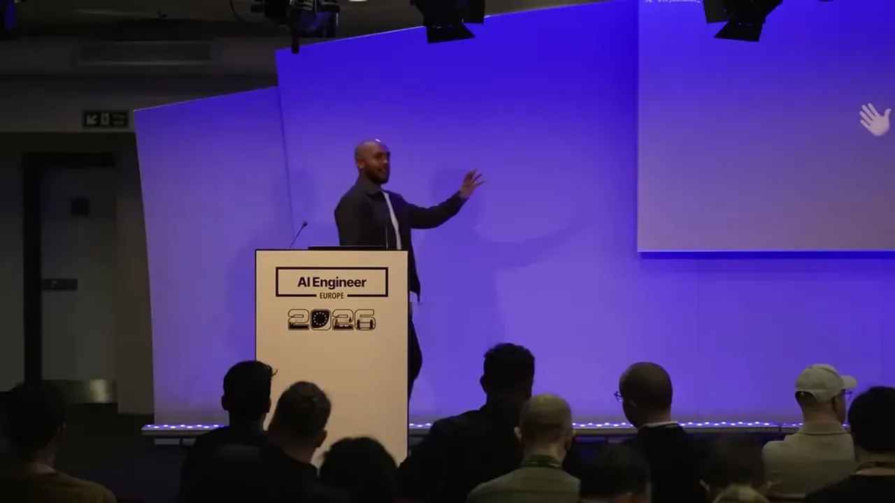
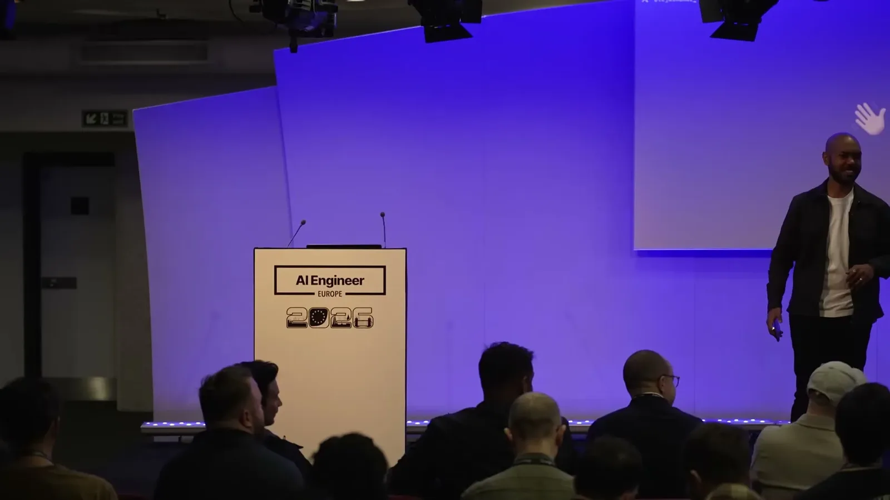
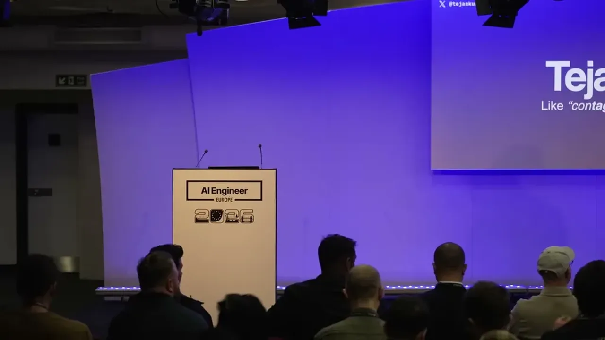
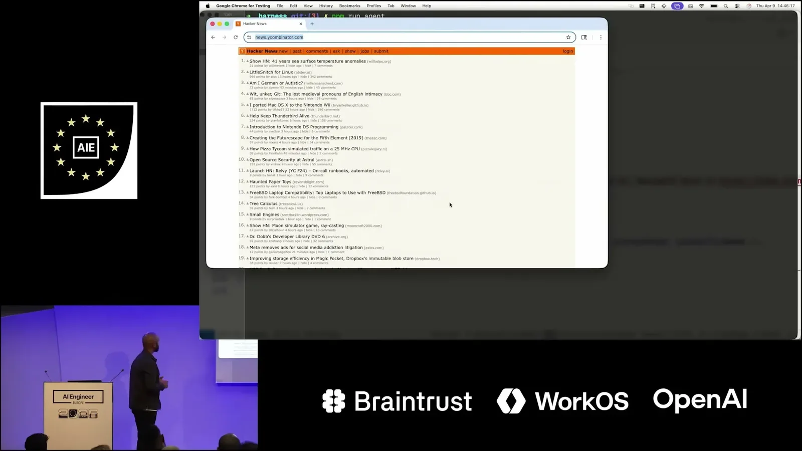
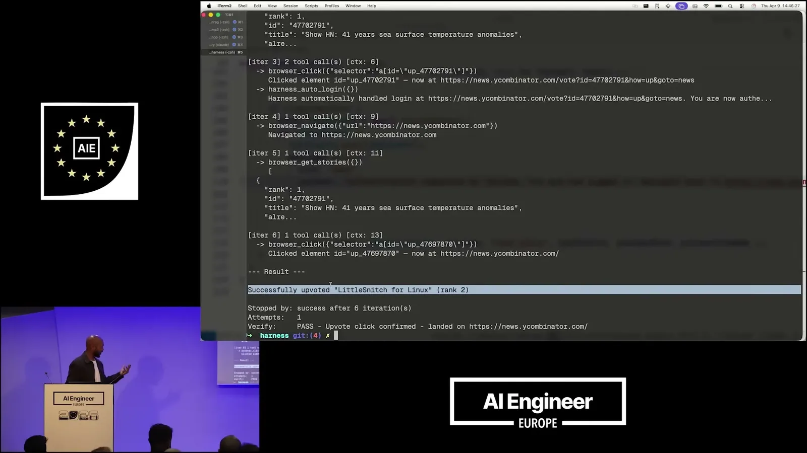
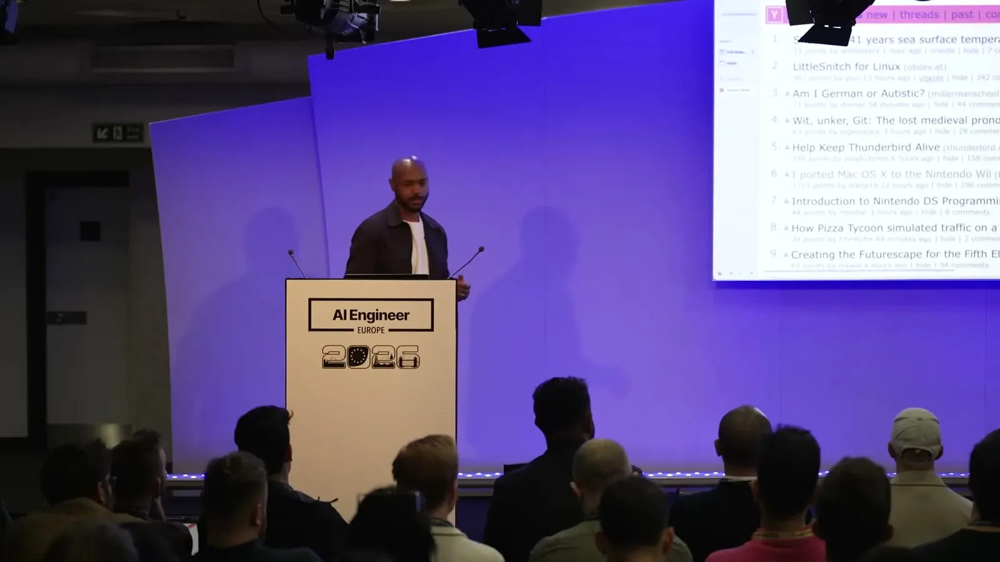
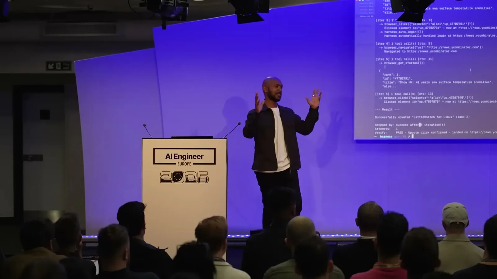
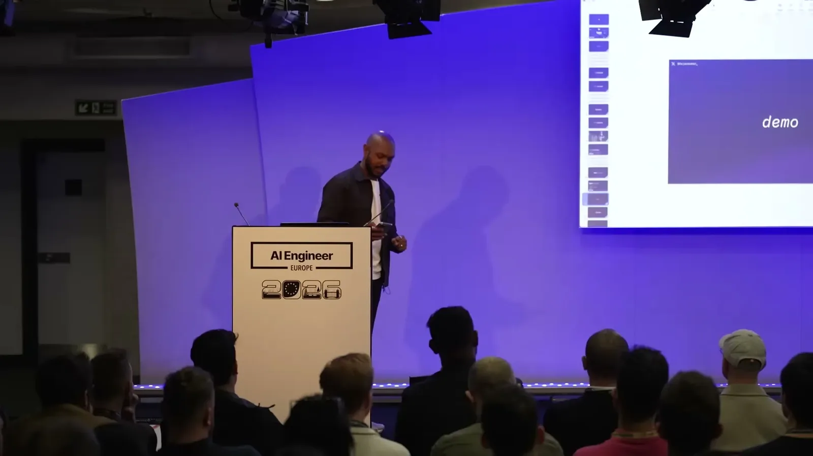
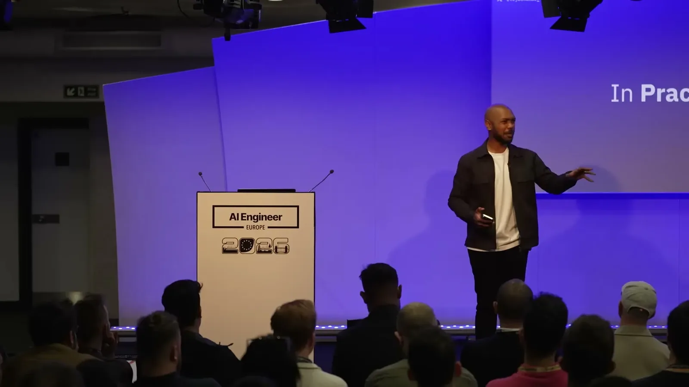
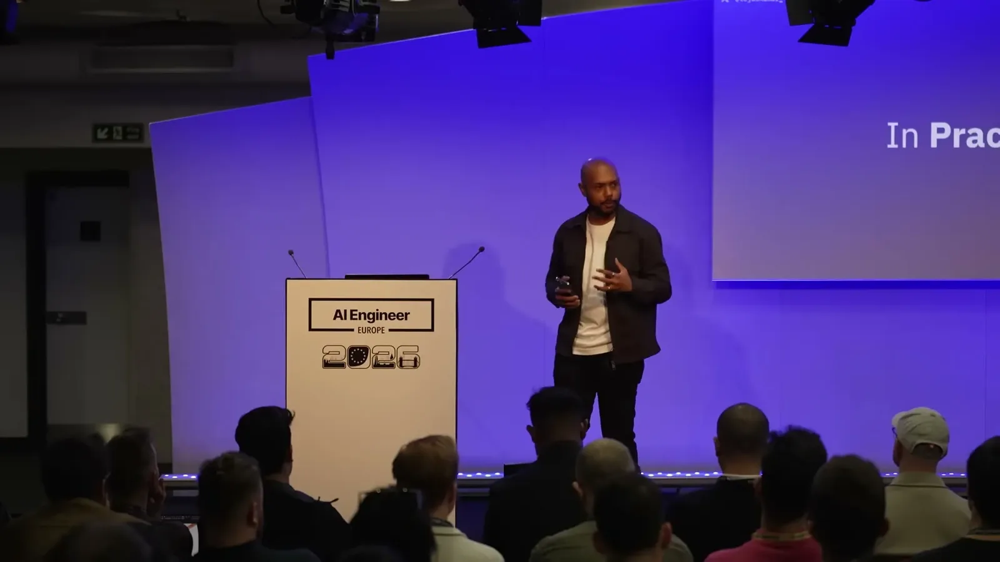
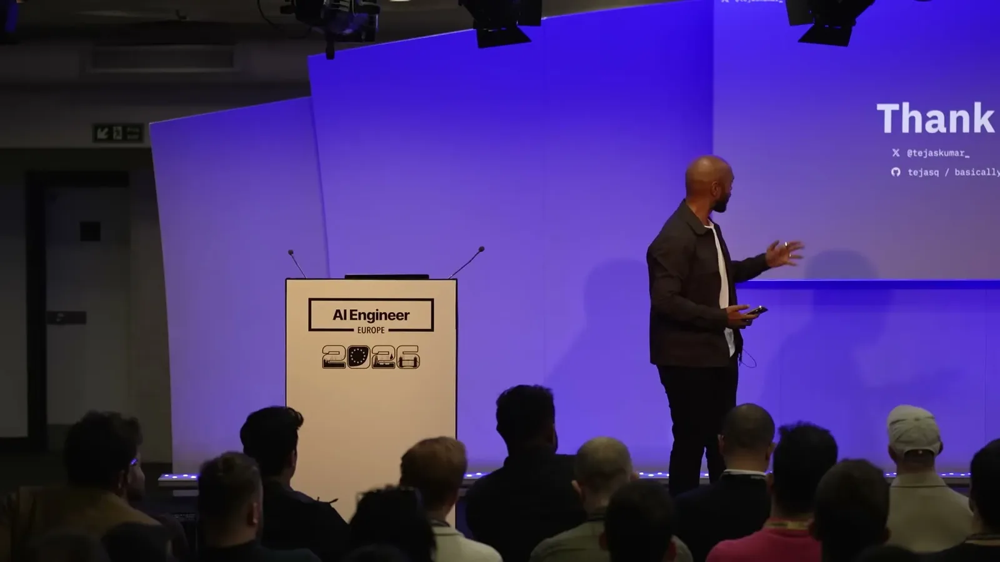
| Stance | Claim | t |
|---|---|---|
| asserts | An agent harness is defined as everything around the model that gives it grounding in reality. | 04:07 |
| asserts | Context management, including compacting context, is described as one of the recurring parts of a harness. | 04:38 |
| asserts | The purpose of building a harness is reliability, not capability. | 02:34 |
| warns | The unharnessed demo agent hit a login screen, panicked, and lied about completing the task. | 09:17 |
| recommends | Credentials should be injected deterministically and securely from the harness itself, not from the agent, so the agent never has access to secrets. | 16:05 |
| asserts | The verify step that checks whether the upvote actually succeeded is deterministic code, not another LLM call. | 14:01 |
| predicts | The speaker predicts 2026 will be 'the year of harnesses,' following 2025 as the year of agents. | 19:11 |
| predicts | The speaker predicts 2027 could bring dynamic, on-the-fly generated harnesses that an agent builds for itself before doing a task. | 19:11 |
| asserts | IBM's open-source 'open rag' project uses a harness to provide enterprise-level security for RAG over siloed internal data. | 18:08 |
Machine-readable copy embedded in this page (script#ontology) and in the corpus ontology.